fx-ct-scene-cut at 0.9 s; blur/histogram/mean [[93.86355152761743, 94.19841579861111, 94.19841579861111], [95.29088458805194, 95.61851128472222, 95.61851128472222], [94.82037579705319, 95.1500217013889, 95.1500217013889], [0, 0, 0]]


Diagnostic only. Shared shaders, owner limits and production frames remain unchanged. Images: mobile / candidate / heatmap.
fx-ct-scene-cut at 0.9 s; blur/histogram/mean [[93.86355152761743, 94.19841579861111, 94.19841579861111], [95.29088458805194, 95.61851128472222, 95.61851128472222], [94.82037579705319, 95.1500217013889, 95.1500217013889], [0, 0, 0]]
fx-ct-scene-cut at 1.5 s; blur/histogram/mean [[93.65900358390724, 93.77578125, 93.77578125], [95.11758674681181, 95.244921875, 95.23832465277778], [94.57296897344833, 94.70147569444444, 94.70147569444444], [0, 0, 0]]


fx-ct-scene-cut at 2.1 s; blur/histogram/mean [[92.97012761489374, 93.44780815972223, 93.44780815972223], [94.42117471049838, 94.90149739583333, 94.90149739583333], [93.90157954726945, 94.39576822916666, 94.39576822916666], [0, 0, 0]]


fx-ct-negative-panels at 2.1 s; blur/histogram/mean [[40.3520787304641, 25.220182291666667, 25.072265625], [43.803110278769815, 31.79535590277778, 31.79535590277778], [58.94672898929268, 49.30473090277778, 49.30473090277778], [0, 0, 0]]


fx-cr-signal-lost at 2.1 s; blur/histogram/mean [[26.42917036775044, 12.497526041666667, 12.411762152777778], [32.546872627995164, 14.088129340277778, 13.774761284722222], [37.531376840034696, 21.400868055555556, 21.20486111111111], [0, 0, 0]]


fx-ct-scene-cut at 0.3 s; blur/histogram/mean [[22.687752496273983, 13.361697048611111, 10.922243923611111], [23.137122950305805, 14.165473090277779, 10.83127170138889], [24.655950192015748, 14.072526041666666, 11.83224826388889], [0, 0, 0]]


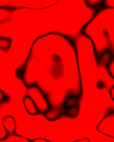
fx-cc-wiggle-flicker at 0.3 s; blur/histogram/mean [[24.107421897462952, 23.318033854166668, 23.318033854166668], [23.716320195165423, 22.7951171875, 22.7951171875], [23.366153759800202, 22.22593315972222, 22.22593315972222], [0, 0, 0]]


fx-ct-chaotic-heat at 0.3 s; blur/histogram/mean [[21.53235765691055, 14.555989583333334, 10.469487847222222], [18.67537563380053, 18.2123046875, 0.1560546875], [10.496633393883627, 10.068294270833333, 0.07901475694444444], [0, 0, 0]]


fx-ct-chaotic-heat at 1.5 s; blur/histogram/mean [[19.218285966574015, 14.873502604166667, 14.153363715277777], [19.512272570763084, 18.795052083333335, 2.2765190972222222], [11.32389121269023, 8.157291666666667, 5.530642361111111], [0, 0, 0]]


fx-cc-feverish at 0.9 s; blur/histogram/mean [[6.625328036816107, 6.622677951388889, 6.622677951388889], [18.357879937354006, 18.372135416666666, 18.372135416666666], [14.401466546617728, 14.50603298611111, 14.390060763888888], [0, 0, 0]]


fx-cc-wiggle-flicker at 0.9 s; blur/histogram/mean [[15.962655969631513, 15.255381944444444, 15.255381944444444], [15.689570880490441, 14.869162326388889, 14.869162326388889], [14.69973915280983, 13.69552951388889, 13.69552951388889], [0, 0, 0]]


fx-mt-photo-snap at 1.5 s; blur/histogram/mean [[13.394450152422577, 0.5055989583333333, 0.3369357638888889], [13.495614840459698, 0.5202690972222223, 0.3765190972222222], [13.428006797053364, 0.5038194444444445, 0.30885416666666665], [0, 0, 0]]


fx-ct-lightning-crack at 0.3 s; blur/histogram/mean [[11.686802145210022, 1.6113498263888888, 0.29073350694444444], [12.362344744860318, 1.8718532986111112, 0.2816189236111111], [13.06422756175662, 2.0452256944444445, 0.3003472222222222], [0, 0, 0]]
fx-cc-shiny-stack at 0.3 s; blur/histogram/mean [[10.416850219687644, 1.716427951388889, 0.1750217013888889], [11.026031883464793, 1.6209635416666666, 0.10551215277777778], [11.632079567338755, 1.4227864583333334, 0.008680555555555556], [0, 0, 0]]

fx-ov-bg-3d-shapes at 0.3 s; blur/histogram/mean [[10.30686682952291, 1.5552734375, 0.8707682291666666], [10.14481539181487, 1.5759331597222221, 0.8485026041666667], [9.336321779716078, 1.3631727430555556, 0.8506293402777778], [0, 0, 0]]

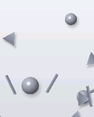
fx-ov-bg-3d-shapes at 0.9 s; blur/histogram/mean [[10.236666877422694, 1.538888888888889, 0.8455729166666667], [10.085516111465331, 1.555490451388889, 0.8148654513888889], [9.302067546832626, 1.3412109375, 0.8312282986111111], [0, 0, 0]]
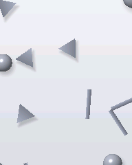
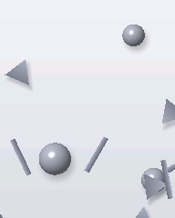
fx-ov-bg-3d-shapes at 1.5 s; blur/histogram/mean [[10.133084044299078, 1.5121744791666667, 0.8124782986111111], [9.992962068044783, 1.5303602430555556, 0.7735894097222222], [9.203826042351517, 1.3157118055555554, 0.8032552083333333], [0, 0, 0]]
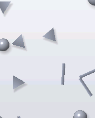
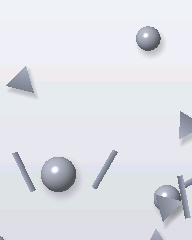
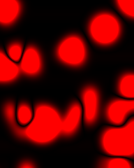
fx-ov-bg-3d-shapes at 2.1 s; blur/histogram/mean [[10.004011379980506, 1.4307508680555556, 0.7422526041666667], [9.873350730315027, 1.4674913194444446, 0.7013454861111111], [9.105826085306951, 1.2545789930555555, 0.7260199652777778], [0, 0, 0]]
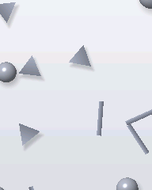
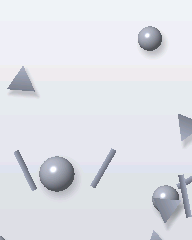
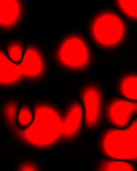
fx-ct-lightning-crack at 1.5 s; blur/histogram/mean [[8.33284475795715, 4.179926215277778, 3.7594401041666665], [8.808136527387688, 4.457118055555555, 3.921267361111111], [9.328480448014139, 4.6625, 4.118446180555556], [0, 0, 0]]
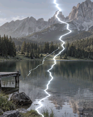
fx-ct-chaotic-heat at 2.1 s; blur/histogram/mean [[8.961539910920244, 8.931792534722222, 8.931792534722222], [8.705169858186823, 8.685568576388889, 8.685568576388889], [4.727793375107753, 4.7272352430555555, 4.7272352430555555], [0, 0, 0]]
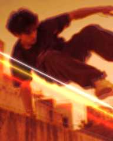